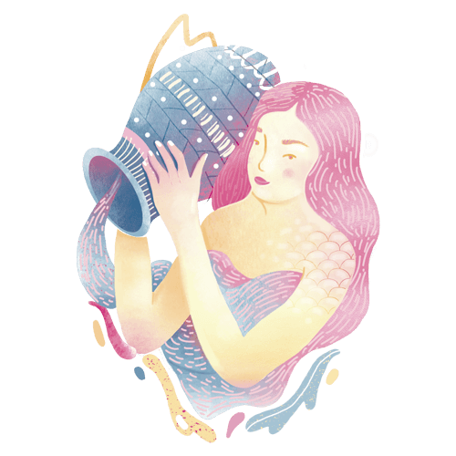

Horóscopo
-  Aquário 21/03 - 19/04
- Áries 21/03 - 19/04
- Câncer 22/06 - 22/07
- Capricórnio 22/12 - 19/01
- Escorpião 23/10 - 21/11
- Gêmeos 21/05 - 21/06
- Leão 23/07 - 22/08
- Libra 23/09 - 22/10
- Peixes 19/02 - 20/03
- Touro20/04 - 20/05
- Sagitario22/11 - 21/12
- Virgem 23/08 - 22/09